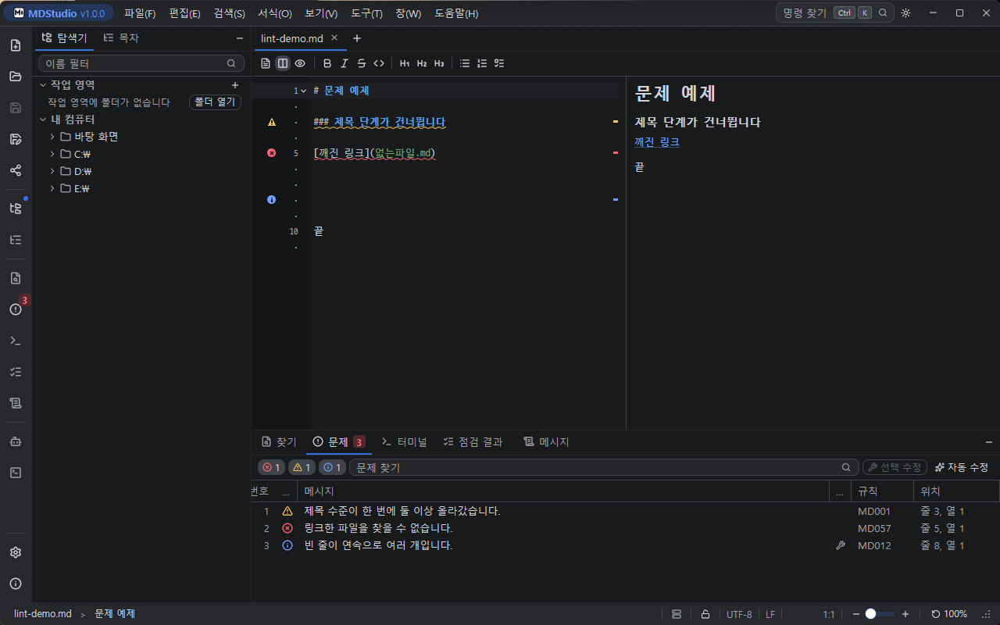

문제와 자동 수정
마크다운 문법과 모양의 문제를 문서를 쓰는 동안 찾아 보여 주고, 고칠 수 있는 문제는 한 번에 수정합니다.
문제 창 열기
- 보기 > 도구 창 > 문제(Ctrl+Alt+P)를 선택합니다.
- 아래 도구 창에 현재 문서의 문제 목록이 나타납니다. 탭 이름 옆 숫자가 문제 수입니다.
- 편집기에서는 문제 자리에 물결 밑줄이 그어지고, 글을 고치면 잠시 뒤 다시 검사합니다.
목록 읽고 이동하기
목록의 열은 심각도·메시지·수정·규칙·위치입니다. 심각도는 오류·경고·정보 세 가지입니다. 수정 열에 렌치 아이콘이 있으면 고칠 수 있는 문제입니다.
- 줄을 클릭하면 편집기의 커서가 그 자리로 가고 초점은 목록에 남습니다.
- 줄을 더블클릭하거나 Enter를 누르면 편집기로 가서 그 문제의 설명 카드가 열립니다.
- 도구 줄의 오류·경고·정보 아이콘을 클릭하면 그 심각도를 숨기거나 다시 보입니다.
- 검색란(「문제 찾기」)에 단어를 입력하면 메시지·규칙·줄 번호에 그 단어가 모두 든 문제만 남습니다.
- 줄을 오른쪽 클릭하면 이동·미리보기·이 문제 수정·빠른 수정·메시지 복사 메뉴가 나옵니다.
문서 안에서 다음 문제와 이전 문제로 옮기려면 Ctrl+F8, Ctrl+Shift+F8을 누릅니다. 메뉴에는 없으므로 명령 팔레트(Ctrl+K)에서 「다음 문제」·「이전 문제」로도 찾습니다.
참고: 한 문서에 문제가 5,000건을 넘으면 심한 것부터 5,000건만 표시합니다. 고치면 나머지가 이어서 나타납니다.

문제 고치기
- 문제 하나: 목록의 렌치 아이콘을 클릭하거나, 줄을 선택하고 [선택 수정] 버튼을 클릭합니다. 편집기에서 밑줄 친 줄을 오른쪽 클릭하거나 줄 번호를 오른쪽 클릭해 나오는 「이 문제 수정」도 같습니다. 그 문제만 고쳐지고, 실행 취소(Ctrl+Z) 한 번으로 돌아옵니다.
- 문서 전체: 도구 > 문제 자동 수정(F7)을 선택하거나 문제 창의 [자동 수정] 버튼을 클릭합니다. 고친 건수와 두고 간 건수, 직접 수정해야 하는 건수가 알림으로 나옵니다. 고칠 문제가 없으면 「수정할 문제가 없습니다」가 나옵니다.
- 깨진 링크: 줄을 선택하고 [선택 수정] 버튼을 클릭하면 빠른 수정 목록이 열립니다. 링크 해제(텍스트만 남김)나 그림 제거를 선택합니다.
읽기 전용 문서에서는 문서 전체 수정을 쓸 수 없습니다.
검사하는 규칙
| 규칙 | 찾는 문제 | 심각도 | 수정 |
|---|---|---|---|
| MD001 | 제목 수준이 한 번에 둘 이상 올라감 | 경고 | 직접 |
| MD009 | 줄 끝 공백(두 칸은 줄바꿈이라 제외) | 정보 | 자동 |
| MD010 | 탭 문자 | 정보 | 자동 |
| MD011 | 뒤바뀐 링크 (글)[주소] |
오류 | 자동 |
| MD012 | 빈 줄이 3줄 이상 연속 | 정보 | 자동 |
| MD018 | # 뒤에 공백 없음 |
경고 | 자동 |
| MD019 | # 뒤에 공백이 여러 개 |
정보 | 자동 |
| MD022 | 제목 위아래에 빈 줄 없음 | 정보 | 문제 하나만 |
| MD023 | 제목 앞에 들여쓰기 | 정보 | 자동 |
| MD024 | 중복된 제목 | 경고 | 직접 |
| MD025 | 최상위 제목(H1)이 둘 이상 | 경고 | 직접 |
| MD026 | 제목 끝 문장 부호 | 정보 | 직접 |
| MD034 | <>로 감싸지 않은 URL |
정보 | 직접 |
| MD040 | 코드 블록에 언어 없음 | 경고 | 자동 |
| MD042 | 링크 대상이 비어 있음 | 경고 | 직접 |
| MD045 | 그림에 대체 텍스트 없음 | 경고 | 직접 |
| MD047 | 파일 끝에 줄 바꿈 없음 | 정보 | 직접 |
| MD057 | 링크한 파일이 없음 | 오류 | 빠른 수정 |
- 자동은 F7과 [자동 수정] 버튼이 고치는 규칙입니다. 코드 블록 안의 공백과 탭은 건드리지 않습니다.
- 문제 하나만은 [선택 수정] 버튼으로만 고칩니다. 직접은 문서를 보고 직접 고칩니다.
- MD057은 저장한 적 있는 문서에서만 검사합니다.
문제 검사 켜고 끄기
- 도구 > 설정 > 편집기를 엽니다.
- 「기능」 묶음에서 「마크다운 린트(편집기 밑줄·문제 창)」를 선택하거나 해제합니다.
- [확인] 버튼을 클릭합니다.
끄면 편집기의 밑줄과 문제 목록이 모두 사라지고, 문제 창에 「마크다운 린트가 꺼져 있습니다」가 나옵니다.
관련 페이지
- 문제 창의 위치는 화면 구성을 봅니다.
- 설정 목록은 설정을 봅니다.
- 링크와 그림은 그림·링크·기호·다이어그램·수식을 봅니다.